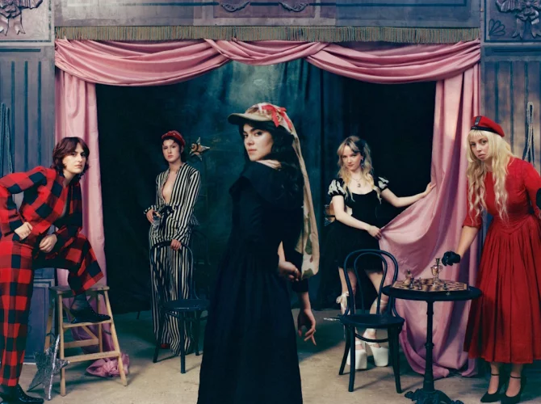

The Last Dinner Party is a British band known for their dramatic and theatrical approach to music, combining art rock and baroque pop with powerful vocals and intricate instrumentation. They have quickly gained attention for their dynamic live performances and unique sound.
The Last Dinner Party stands out with their fusion of art rock and baroque pop, characterized by lush arrangements, theatrical flair, and commanding vocal performances. Their live shows have been praised for their energy and creativity, marking them as a distinctive presence in the UK music scene.
This stylishly dressed London quintet worked thoughtfully and single by single towards their first successful album and quickly followed up with the second: ‘From The Pyre’. On this record, Abigail Morris and company once again excel in their elusive, baroque pop rock, with a measured sense of drama and statement. The Last Dinner Party evokes associations with Kate Bush, David Bowie, and Queen, and has opened for The Rolling Stones and Nick Cave. Not exactly minor names! The show by this natural-born live band is a must-highlight event in your calendar. Image by Laura Marie Cieplik
Dit stijlvol geklede Londense vijftal werkte bedachtzaam en singlegewijs naar zijn eerste succesalbum toe en kwam al rap met het tweede: ‘From The Pyre’. Hierop blinken Abigail Morris en consorten andermaal uit in hun ongrijpbare, barokke poprock, met een gedoseerd gevoel voor drama en statement. The Last Dinner Party ademt associaties met Kate Bush, David Bowie en Queen, en opende voor The Rolling Stones en Nick Cave. Geen misselijke namen! De show van deze geboren liveband is een dik onderstreepte happening in je konijnenagenda. Beeld door Laura Marie Cieplik
5
♀️ Female
No